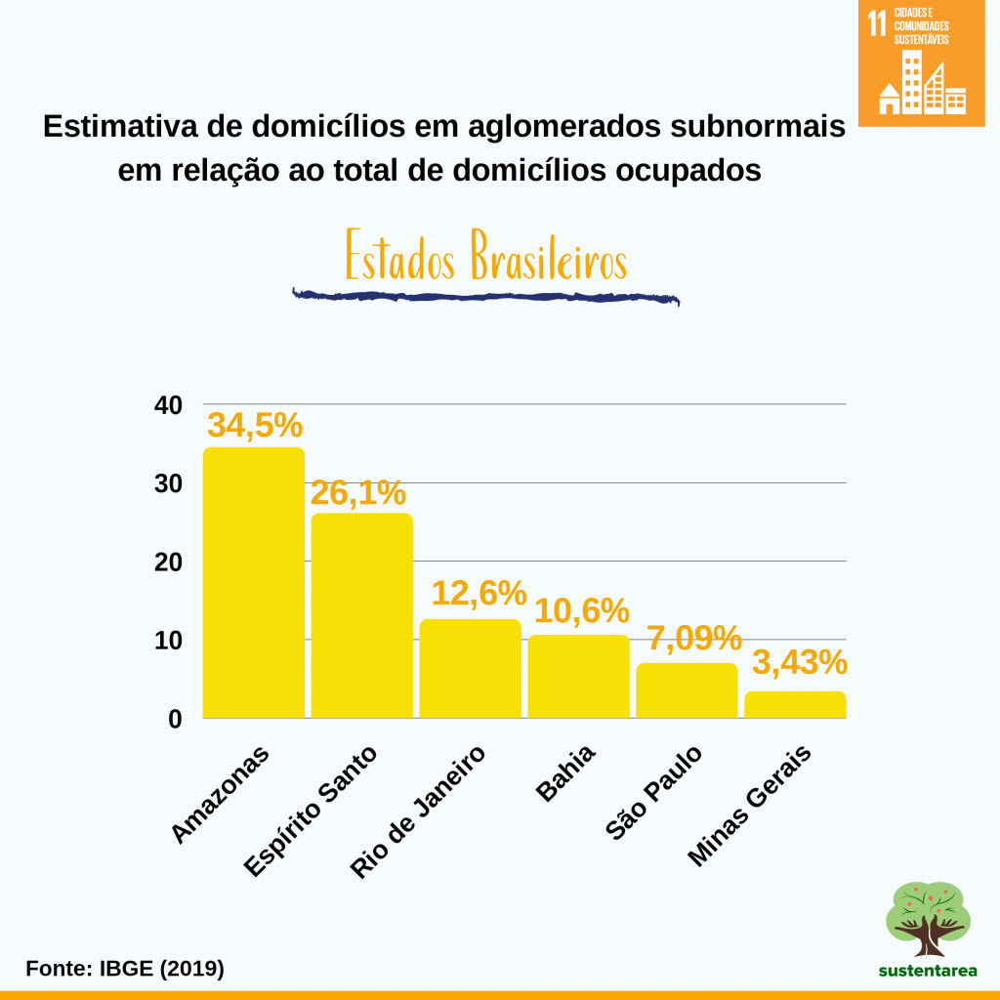

cidades comunidades sustentaveis
"Cidades e Comunidades Sustentáveis" é um dos Objetivos de Desenvolvimento Sustentável (ODS) estabelecidos pelas Nações Unidas como parte da Agenda 2030 para o Desenvolvimento Sustentável. Especificamente, este objetivo é conhecido como "ODS 11: Cidades e Comunidades Sustentáveis".

objetivos da ods numero 11
Esse objetivo tem como objetivo tornar as cidades e os assentamentos humanos inclusivos, seguros, resilientes e sustentáveis até 2030. Vários aspectos são abordados dentro deste objetivo para promover o desenvolvimento urbano sustentável. Algumas características-chave incluem:
Acesso a Moradia Adequada:
Garantir que as pessoas tenham acesso a moradias seguras, acessíveis e sustentáveis.
Desenvolvimento Urbano Sustentável:
Promover o planejamento e a gestão de assentamentos humanos de forma inclusiva, segura, resiliente e sustentável.
Transporte Sustentável:
Melhorar o acesso a sistemas de transporte seguros, acessíveis e sustentáveis.
Espaços Públicos:
Garantir espaços públicos inclusivos, seguros, resilientes e sustentáveis, que promovam a coesão social.
Gestão de Resíduos:
Reduzir a quantidade de resíduos gerados e promover práticas sustentáveis de gestão de resíduos.
Acesso a Serviços Básicos:
Garantir o acesso de todos a serviços básicos, como água potável, saneamento, energia e transporte.
Preservação do Patrimônio Cultural e Natural:
Proteger e preservar o patrimônio cultural e natural das comunidades urbanas.
Participação Comunitária:
Promover a participação ativa e inclusiva das comunidades na tomada de decisões relacionadas ao desenvolvimento urbano.
Resiliência a Desastres:
Desenvolver cidades resilientes a desastres naturais e eventos climáticos extremos.
Equidade e Inclusão:
Reduzir as disparidades e promover a igualdade de oportunidades para todos os habitantes urbanos.
1- Planejamento Urbano Sustentável
2- Mobilidade Sustentável
3- Acesso a Moradia Adequada
4- Resiliência a Desastres e Mudanças Climáticas
5- Participação Comunitária
6- Inclusão Social e Econômica
7- Gestão Sustentável de Resíduos
8- Tecnologia e Inovação
9- Preservação do Patrimônio Cultural e Natural
10- Cooperação Internacional e Parcerias
metas da ods 11